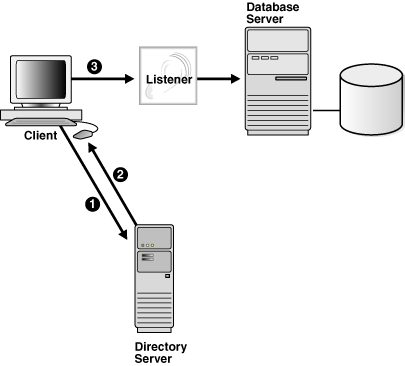
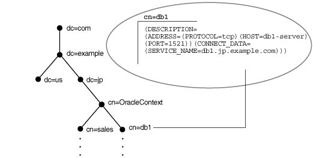
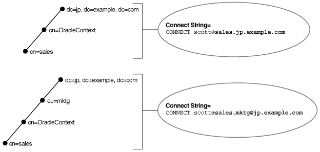
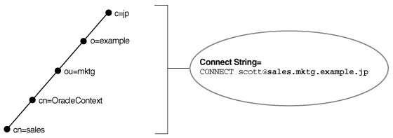
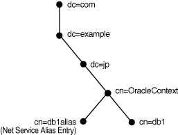
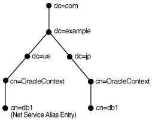

3 Managing Network Address Information
Identify how the network address information for Oracle Net Services can be stored in local files or in a centralized directory server.
Using localized management, network address information is stored in tnsnames.ora files on each computer in the network. Using centralized management, network address information is stored in centralized directory server.
- Using Localized Management
When localized management is used, network computers are configured with configuration files. The files are stored locally on the computers. - Using a Directory Server for Centralized Management
Parent topic: Understanding Oracle Net Services
3.1 Using Localized Management
When localized management is used, network computers are configured with configuration files. The files are stored locally on the computers.
Table 3-1 Oracle Net Configuration Files Used with Localized Management
| Configuration File | Description |
|---|---|
|
|
Located primarily on the clients, this file contains network service names mapped to connect descriptors. This file is used for the local naming method. |
|
|
Located on client and database server computers, this file may include the following:
|
|
|
Located on the database server, this configuration file for the listener may include the following:
|
|
|
Located on the computer where Oracle Connection Manager runs, this configuration file includes the following components:
Each Oracle Connection Manager configuration is encapsulated within a single name-value (NV) string, which consists of the preceding components. |
Typically, tools such as Oracle Database Configuration Assistant (DBCA) and Oracle Net Configuration Assistant (NETCA) create configuration files in the ORACLE_HOME/network/admin directory for Oracle Database installations, the GRID_HOME/network/admin directory for Oracle Grid Infrastructure installations, or the corresponding ORACLE_BASE_HOME/network/admin directory for a read-only Oracle home. If you have installed multiple databases, then these are created in the Oracle home or Grid home where DBCA or NETCA is run (or the Oracle base home for read-only instances). However, configuration files can be created in other directories.
For example, the order for checking the tnsnames.ora file is:
-
The directory specified by the
TNS_ADMINenvironment variable -
If the
TNS_ADMINenvironment variable is not set or the file is not found in theTNS_ADMINdirectory:-
On Linux and UNIX: The
ORACLE_HOME/network/admindirectory (or itsORACLE_BASE_HOME/network/admindirectory for a read-only Oracle home) -
On Windows:
ORACLE_HOME\network\admindirectory (or itsORACLE_BASE_HOME\network\admindirectory for a read-only Oracle home)
-
-
For a read-only Oracle home, if the file is not found in the Oracle base home:
-
On Linux and UNIX: The
ORACLE_HOME/network/admindirectory -
On Windows: The
ORACLE_HOME\network\admindirectory
-
Note:
-
On Windows, the
ORACLE_HOMElocation is determined by theORACLE_HOME\bin\oracle.keyfile (which contains the name of the Windows Registry key whereORACLE_HOMEis defined). Also, theTNS_ADMINenvironment variable is used if it is set in the environment of the process. If you do not define theTNS_ADMINenvironment variable in the environment or if the process is a service that does not have an environment, then Windows scans the registry for aTNS_ADMINparameter. -
With Oracle Instant Client,
tnsnames.orais located in the subdirectory of the Oracle Instant Client software. For example, in the/opt/oracle/instantclient_release_number/network/admindirectory.
Parent topic: Managing Network Address Information
3.2 Using a Directory Server for Centralized Management
When an Oracle network uses a directory server, the directory server manages global database links as network service names for the Oracle databases in the network. Users and programs can use a global link to access objects in the corresponding database.
Oracle Net Services uses a centralized directory server as one of the primary methods for storing connect identifiers. Clients use the connect identifiers in their connect string, and the directory server resolves the connect identifier to a connect descriptor that is passed back to the client. This feature is called directory naming. This type of infrastructure reduces the cost of managing and configuring resources in a network.
Oracle Internet Directory provides a centralized mechanism for managing and configuring a distributed Oracle network. The directory server can replace client-side and server-side localized tnsnames.ora files.
Figure 3-1 shows a client resolving a connect identifier through a directory server.
-
The client contacts the directory server to resolve a connect identifier to a connect descriptor.
-
The directory server resolves the connect identifier and retrieves the connect descriptor for the client.
-
The client sends the connection request to the listener, using the connect descriptor.
Figure 3-1 Client Using a Directory Server to Resolve a Connect Identifier

Description of "Figure 3-1 Client Using a Directory Server to Resolve a Connect Identifier"
Note:
Java Database Connectivity (JDBC) Drivers support directory naming. See Oracle Database JDBC Developer's Guide for additional information.
This section contains the following topics:
- Understanding the Directory Information Tree
- Understanding Oracle Context
The entries under Oracle Context support various directory-enabled features, including directory naming. - Understanding Net Service Alias Entries
- Who Can Add or Modify Entries in the Directory Server
- Client Connections Using Directory Naming
Most clients needing to perform name lookups in the directory server access the directory server using anonymous authentication. - Considerations When Using Directory Servers
- Limitations of Directory Naming Support with Microsoft Active Directory
Parent topic: Managing Network Address Information
3.2.1 Understanding the Directory Information Tree
Directory servers store information in a hierarchical namespace structure called a directory information tree (DIT). Each node in the tree is called an entry. Oracle Net Services uses both the tree structure and specific entries in the tree. DITs are commonly aligned with an existing domain structure such as a Domain Name System (DNS) structure or a geographic and organization structure.
Figure 3-2 shows a DIT structured according to DNS domain components.
Figure 3-3 shows a DIT structured according to country, organization, and organizational units. This structure is commonly referred to as an X.500 DIT.
For example, consider Figure 3-4. The cn=sales and cn=db1 entries represent a network service name and a database service, respectively. Additional entries under cn=sales and cn=db1 contain the connect descriptor information. These entries are not represented in the graphic. The cn=sales and cn=db1 entries enable clients to connect to the database using connect strings CONNECT username@sales and CONNECT username@db1.
Figure 3-4 Database Service and Net Service Entries in a DIT

Description of "Figure 3-4 Database Service and Net Service Entries in a DIT"
Each entry is uniquely identified by a distinguished name (DN). The DN indicates exactly where the entry resides in the directory server hierarchy. The DN for db1 is dn:cn=db1,cn=OracleContext,dc=jp,dc=example,dc=com. The DN for sales is dn:cn=sales,cn=OracleContext,dc=jp,dc=example,dc=com. The format of a DN places the lowest component of the DIT to the left, then moves progressively up the DIT.
Each DN is made up of a sequence of relative distinguished names (RDNs). The RDN consists of an attribute, such as cn, and a value, such as db1 or sales. The RDN for db1 is cn=db1, and the RDN for sales is cn=sales. The attribute and its value uniquely identify the entry.
- Fully-Qualified Names for Domain Component Namespaces
- Fully-Qualified Names for X.500 Namespaces
- Using the Relative Name of an Entry
If a client is configured with a default realm Oracle Context, then an entry can be identified by its relative name, and the service can be referred to by its common name. A relative name can be used if the entry is in the same Oracle Context that was configured to be the default Oracle Context for the client's Oracle home. - Using the Fully-Qualified Name of an Entry
Parent topic: Using a Directory Server for Centralized Management
3.2.1.1 Fully-Qualified Names for Domain Component Namespaces
For domain component namespaces, the default directory entry defined for the client must be in one of the following formats:
dc[,dc][...] ou,dc[,dc][...]
In the preceding syntax, [dc] represents an optional domain component, [...] represents additional domain component entries and ou represents the organizational unit entry.
The fully-qualified name used in the connect identifier by the client must be in one of the following formats:
cn.dc[.dc][...] cn[.ou]@dc[.dc][...]
In the preceding syntax, [cn] represents the Oracle Net entry.
Example 3-1 Using a Fully-Qualified Name with an Organizational Unit
Consider a directory server that contains an entry for database object sales with a DN of cn=sales,cn=OracleContext,dc=jp,dc=example,dc=com. In this example, the client requires a connect identifier of sales.jp.example.com.
Consider a similar entry that contains database object sales with a DN of cn=sales,cn=OracleContext,ou=mktg,dc=jp,dc=example,dc=com.
Because domain components must be separated from organization units, the client must use the format cn.ou@dc.dc.dc. The client requires the connect identifier to be sales.mktg@jp.example.com.
Figure 3-5 illustrates the preceding example.
Figure 3-5 Fully-Qualified Name for Domain Component Namespaces

Description of "Figure 3-5 Fully-Qualified Name for Domain Component Namespaces"
Parent topic: Understanding the Directory Information Tree
3.2.1.2 Fully-Qualified Names for X.500 Namespaces
For X.500 namespaces, the default directory entry defined for the client must be in one of the following formats:
[ou],o [ou],o,c
In the preceding formats, [ou] represents an optional organizational unit name, o represents the organization, and c represents the country.
The fully-qualified name the client uses as the connect identifier must be in one of the following formats:
cn[.ou].o cn[.ou].o.c
In the preceding formats, cn represents the Oracle Net entry.
For example, if the directory contains database object sales with a DN of cn=sales,cn=OracleContext,ou=mktg,o=example,c=jp, then the client requires a connect identifier of sales.mktg.example.jp. Figure 3-6 illustrates this example.
Figure 3-6 Fully-Qualified Name for X.500 Namespaces

Description of "Figure 3-6 Fully-Qualified Name for X.500 Namespaces"
Parent topic: Understanding the Directory Information Tree
3.2.1.3 Using the Relative Name of an Entry
If a client is configured with a default realm Oracle Context, then an entry can be identified by its relative name, and the service can be referred to by its common name. A relative name can be used if the entry is in the same Oracle Context that was configured to be the default Oracle Context for the client's Oracle home.
Consider a directory server that contains an entry for a database called sales with a DN of dn:cn=sales,cn=OracleContext,o=example,c=us, as shown in Figure 3-7. If the client is configured with a default realm Oracle Context of cn=OracleContext,o=example,c=us, then the connect identifier can be sales.
Note:
The JDBC OCI Driver supports both full-qualified and relative naming. The JDBC Thin Driver supports fully-qualified naming only when the complete DN is used.
Related Topics
Parent topic: Understanding the Directory Information Tree
3.2.1.4 Using the Fully-Qualified Name of an Entry
Consider the same directory structure as shown in Figure 3-7, but with the client's Oracle home configured with a default realm Oracle Context of cn=OracleContext,o=example,c=jp.
Because the client is configured with a default Oracle Context that does not match the location of sales in the directory server, a connect string that uses sales does not work. Instead, the client must specifically identify the location of sales, which can be done using one of the following ways:
-
The entry's complete DN can be used in the connect string, for example:
CONNECT
username@"cn=sales,cn=OracleContext,o=example,c=us" Enter password:passwordJDBC Thin drivers support fully-qualified naming only when the complete DN is used. However, many applications do not support the use of a DN.
-
The entry can be referred to by a fully-qualified DNS-style name which is mapped by the Directory Naming adapter to the full x.500 DN of the database object in the LDAP directory, for example:
CONNECT
username@sales.example.us Enter password:password
Note:
JDBC OCI Drivers support fully-qualified naming. JDBC Thin Drivers support fully-qualified naming only when the complete DN is used. See the Oracle Database JDBC Developer's Guide for additional information.
Parent topic: Understanding the Directory Information Tree
3.2.2 Understanding Oracle Context
The entries under Oracle Context support various directory-enabled features, including directory naming.
In Figure 3-8, the entries db1 and sales reside under cn=OracleContext. This entry is a special RDN called an Oracle Context.
During directory configuration, you set the default Oracle Context. Clients use this
Oracle Context as the default location to look up connect identifiers in the directory
server. With Oracle Internet Directory, an Oracle Context located at the root of the
DIT, with DN of dn:cn=OracleContext, points to a default Oracle Context
in an identity management realm. An identity management realm is a collection of
identities governed by the same administrative policies. This Oracle Context is referred
to as a realm Oracle Context. Unless configured to use another Oracle Context, clients
use this realm-specific Oracle Context.
The default Oracle Context affects the connect string. For example, if a client must access the db1 and sales entry frequently, then a reasonable default Oracle Context would be dc=jp,dc=example,dc=com. If a client directory entry does not match the directory entry where a service is located, then the client must specify the fully-qualified name of an entry in the connect string, as described in "Client Connections Using Directory Naming".
Note:
The RDN cn=OracleContext does not have to be explicitly specified in the connect string.
Parent topic: Using a Directory Server for Centralized Management
3.2.3 Understanding Net Service Alias Entries
Directory naming enables you to create network service alias entries in addition to database service and network service name entries. A network service alias is an alternative name for a network service name or database service. A network service alias entry does not have connect descriptor information. Instead, it references the location of the entry for which it is an alias. When a client requests a directory lookup of a network service alias, the directory determines that the entry is a network service alias and completes the lookup as if it is the referenced entry. For example, in Figure 3-9, a network service alias of db1alias is created for a database service of db1. When db1alias is used to connect to a database service, as in CONNECT username@db1alias, it will actually resolve to and use the connect descriptor information for db1.
Figure 3-9 Net Service Alias db1alias in a Directory Server

Description of "Figure 3-9 Net Service Alias db1alias in a Directory Server"
There are several uses for network service aliases. As shown in Figure 3-9, a network service alias can be useful as a way for clients to refer to a network service name by another name. Another use is to have a network service alias in one Oracle Context for a database service or network service name in a different Oracle Context. This enables a database service or network service name to be defined once in the directory server, but referred to by clients that use other Oracle Contexts.
In Figure 3-10, database service db1 resides in dc=jp,dc=example,dc=com. A network service alias named db1 is created in dc=us,dc=example,dc=com. This enables clients in both Japan and the United States to use the connect string CONNECT username@db1 as opposed to clients in the Unites States needing to specify CONNECT username@db1.jp.example.com.
Figure 3-10 Net Service Alias db1 in a Directory Server

Description of "Figure 3-10 Net Service Alias db1 in a Directory Server"
Parent topic: Using a Directory Server for Centralized Management
3.2.4 Who Can Add or Modify Entries in the Directory Server
The database service entries are configured during or after installation. You can then use Oracle Enterprise Manager Cloud Control or Oracle Net Manager to modify the Oracle Net attributes of the database service entries. You can also use these tools to create network service name and network service alias entries.
To use these configuration tools, a DIT structure containing a root Oracle Context, and identity management realm must exist. The directory administrator creates this structure with Oracle Internet Directory Configuration Assistant. For some deployments, the directory administrator may need to create additional Oracle Contexts. Additional Oracle Contexts are usually used to subdivide large sites, or separate a production environment from a test environment.
Certain tools are used by certain groups, and you must be a member of the group to use the tools, as described in the following:
-
To create a database service entry with Database Configuration Assistant:
-
To create network service names or network service aliases with Oracle Net Manager:
The OracleNetAdmins group is owned by itself. Members of the OracleNetAdmins group have create, modify, and read access to Oracle Net objects and attributes. They can also add or delete members in the group, and add or delete groups to be owners of the OracleNetAdmins group.
Any member of the OracleNetAdmins group can add or delete other members from the OracleNetAdmins group. If you prefer another group to add or delete OracleNetAdmins members, then you can change the owner attribute of the OracleNetAdmins group to another group. The owner cannot be an individual user entry but must be a group entry, and the group entry is one comprised of the LDAP schema object classes GroupOfUniqueNames and orclPriviledgeGroup.
The OracleContextAdmins group is a super-user group for Oracle Context. Members of the OracleContextAdmins group can add all supported types of entries to Oracle Context.
The directory user that created Oracle Context is automatically added to these groups. Other users can be added to these groups by the directory administrator.
See Also:
-
"Configuring the Directory Naming Method" for additional information about using Oracle Net Manager
-
Oracle Database Administrator's Guide for additional information about registering a database service with Database Configuration Assistant
Parent topic: Using a Directory Server for Centralized Management
3.2.5 Client Connections Using Directory Naming
Most clients needing to perform name lookups in the directory server access the directory server using anonymous authentication.
To perform a lookup, the directory server must allow anonymous authentication. Directory servers usually allow anonymous authentication by default, however, some directory servers, such as earlier releases of Oracle Internet Directory, require directory configuration to allow anonymous access.
To look up entries, a client must be able to find the directory server in which that entry resides. Clients locate a directory server in one of two ways:
-
Dynamically using DNS. In this case, the directory server location information is stored and managed in a central domain name server. The client, at request processing time, retrieves this information from DNS.
-
Statically in the directory server usage file,
ldap.ora, created by Oracle Internet Directory Configuration Assistant and stored on the client host.
After a directory is found, clients are directed to the realm Oracle Context from the root Oracle Context.
Clients make connections to a database using connect identifiers in the same way they might use other naming methods. A connect identifier can be a database service, network service name, or network service alias. These can be referred to by their common names (relative name) if the default Oracle Context is where the entity resides. If not, then the connect identifier needs a fully-qualified name or distinguished name.
Parent topic: Using a Directory Server for Centralized Management
3.2.6 Considerations When Using Directory Servers
The following considerations should be reviewed when using directory servers:
Parent topic: Using a Directory Server for Centralized Management
3.2.6.1 Performance Considerations
Connect identifiers are stored in a directory server for all clients to access. Depending on the number of clients, there can be a significant load on a directory server.
During a connect identifier lookup, a name is searched under a specific Oracle Context. Users expect relatively quick performance so the database connect time is not affected. Because of the scope of the lookup, users may begin to notice slow connect times if lookups take more than one second.
You can resolve performance problems by changing the network topology or implementing replication.
See Also:
Directory server vendor documentation for details on resolving performance issues
Parent topic: Considerations When Using Directory Servers
3.2.6.2 Security Considerations
Administrative clients can create and modify entries in the directory server, so security is essential. This section contains the following security-related topics:
- Authentication Methods
Clients use different methods of authentication depending upon the task to be performed, such as resolving connect string names and managing directory entries. - Access Control Lists
Parent topic: Considerations When Using Directory Servers
3.2.6.2.1 Authentication Methods
Clients use different methods of authentication depending upon the task to be performed, such as resolving connect string names and managing directory entries.
-
Clients that perform lookups for information in the directory server typically use anonymous authentication. You can configure clients to authenticate their LDAP bind during name lookup. Sites that need to protect their network service data or disable anonymous binds to the directory must configure their clients to use wallets to authenticate during name lookup.
You must set the following parameters in the
sqlnet.orafile for these clients:names.ldap_authenticate_bind = TRUE wallet_location =location_value -
Clients that administer the directory server entries authenticate with the directory server. Database Configuration Assistant or Oracle Net Manager can be used to add or modify the entries. Only authenticated users with proper privileges can modify entries. Use one of the following authentication methods:
-
The client identifies itself to the directory server by means of a DN and a password. The server verifies that the DN and password sent by the client matches the DN and password stored in the directory server.
-
The client identifies itself to the directory server by means of a public-key encryption available with Transport Layer Security (TLS). In public-key encryption, the sender of a message encrypts the message with the public key of the recipient. Upon delivery, the recipient decrypts the message using the recipient's private key.
-
Related Topics
Parent topic: Security Considerations
3.2.6.2.2 Access Control Lists
Authentication is used with access control lists (ACLs) to determine whether clients can read, modify, or add information in the directory server. ACLs specify the following:
-
The entries that the user can access.
-
The authentication method used to access the entry.
-
The access rights, or what the user can do with the object, such as read or write.
ACLs are established for a group of users. During Oracle Context creation, the OracleDBCreators, OracleNetAdmins, and OracleContextAdmins groups are created.
The user who creates Oracle Context using Oracle Net Configuration Assistant is automatically added as the first member of these groups.
Table 3-2 describes ACL requirements for these groups, anonymous users, and their relation to Oracle Net entries in the directory server.
Table 3-2 ACL Requirements for User Groups
| Group | ACL Requirements |
|---|---|
|
Anonymous users |
All Oracle Net attributes and objects in the directory server have read access for the anonymous user. Read access of these objects for anonymous is also applied to Oracle Context. This enables anonymous users to browse directory naming entries contained within the Oracle Net Configuration Assistant sets up this access during client installation. |
|
Members of In addition to the Oracle Context creator, other users can be added to this group by the directory administrator using Oracle Enterprise Manager Cloud Control. |
|
|
Members of In addition to the Oracle Context creator, other users can be added to this group by the directory administrator with Oracle Enterprise Manager Cloud Control. |
|
|
Members of In addition to the Oracle Context creator, other users can be added to this group by the directory administrator. |
Situations in which a high degree of security is desired for lookup or read-access to Oracle Net Services name and related data, administrators can define additional read-access control for some or all of the data. Such ACL definitions can prevent anonymous users from reading the Oracle Net Services data. If read-access to Oracle Net Services data is restricted, then clients must use authenticated binds to do name lookups.
There are no predefined groups or procedures for the Oracle configuration tools for defining read-access restrictions on this data, so administrators must use standard object management tools from their directory system to manually create any necessary groups and ACLs.
ACLs can be added to Oracle Net Services objects using ldapmodify and an LDIF-format file. Example 3-2 shows how to restrict all access for user, cn=user1:
Example 3-2 Restricting User Access with an Access Control List
dn: cn=sales,cn=oraclecontext,dc=example,dc=com replace: orclentrylevelaci orclentrylevelaci: access to attr=(*) by dn="cn=user1" (noread,nosearch,nowrite,nocompare)
The preceding example illustrates the basic form of an ACL for a single object. This approach is not necessarily the best way to define access because access definitions for objects are complex and may involve security properties which are inherited from parent nodes in the DIT. Oracle recommends that administrators refer to the documentation for their directory systems, and integrate access management for Oracle Net Services objects into a directory-wide policy and security implementation.
For Oracle Internet Directory directories, oidadmin has functionality to create users, groups, and also define ACLs for objects and general directory security.
Related Topics
Parent topic: Security Considerations
3.2.6.3 Object Classes
Directories must be populated with the correct version of the Oracle schema before Oracle Context, a database service or network service name entry can be created. The Oracle schema defines the type of objects, called object classes, that can be stored in the directory server and their attributes. Table 3-3 lists the object classes for database service, network service name, and network service alias entries.
Table 3-3 Oracle Net Services LDAP Main Object Classes
| Object Class | Description |
|---|---|
|
|
Defines the attributes for database service entries. |
|
|
Defines the attributes for network service name entries. |
|
|
Defines the attributes for network service alias entries. |
Table 3-4 lists the object classes used by orclDbServer, orclNetService, and orclNetServiceAlias.
Table 3-4 Oracle Net Services LDAP Derived Object Classes
| Object Class | Description |
|---|---|
|
|
Defines a listener protocol address. |
|
|
Defines a list of addresses. |
|
|
Specifies a connect descriptor containing the protocol address of the database and the connect information to the service. |
|
|
Defines a list of connect descriptors. |
These object classes use attributes that specify the contents of connect descriptors.
See Also:
Oracle Database Net Services Reference for additional information about these object classes and their attributes
Parent topic: Considerations When Using Directory Servers
3.2.7 Limitations of Directory Naming Support with Microsoft Active Directory
In addition to Oracle Internet Directory, directory naming support is also provided with Microsoft Active Directory with the following limitations:
-
Oracle provides support for Microsoft Active Directory only on Microsoft Windows operating systems. Therefore, client computers and the database server must run on Microsoft Windows operating systems to access or create entries in Microsoft Active Directory.
-
The following features are not supported by Microsoft Active Directory:
-
Multiple Oracle Contexts
Microsoft Active Directory can support only one Oracle Context.
-
Net service aliases
You cannot create network service aliases in Microsoft Active Directory. However, you can create network service names.
-
See Also:
Microsoft Active Directory documentation for Microsoft-specific information
Parent topic: Using a Directory Server for Centralized Management